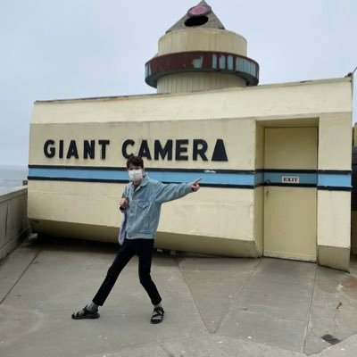

Hello!
My name is Michael Pace. I'm a software engineer and musician in Houston, Texas.
I've got over ten years of programming experience across iOS, Unity, and web.
I like video games and music a lot. My recent favorites are the Sorcery! games and Robert Hood's classic album Minimal Nation.
I'm working on an adventure-slash-music video game of my own, inspired by Knytt. Stay tuned for updates!
Music
Collaborative
All with my friend Cameron; all pop tunes.
Solo
Weirder stuff.
- Onion Slice (spotify, soundcloud)
- Omae (bandcamp)
Talks
- A Tech Debt Case Study, at an iOSoho event on January 14, 2019. The first few minutes didn't make it into the recording.